2022
HOSTILE SALAD
bio-robotic cuisine
An experiment in proxemic actuation plating dishes, incorporating architectural and robotic design sensibilities into culinary processes using ideas of gastronomic proxemics.
CONTEXT
4.117 Creative Computing
MIT SA+P
SOFTWARE
Rhinoceros3D, Grasshopper, Arduino, C++, 3D printing
SUPERVISOR
Axel Killian
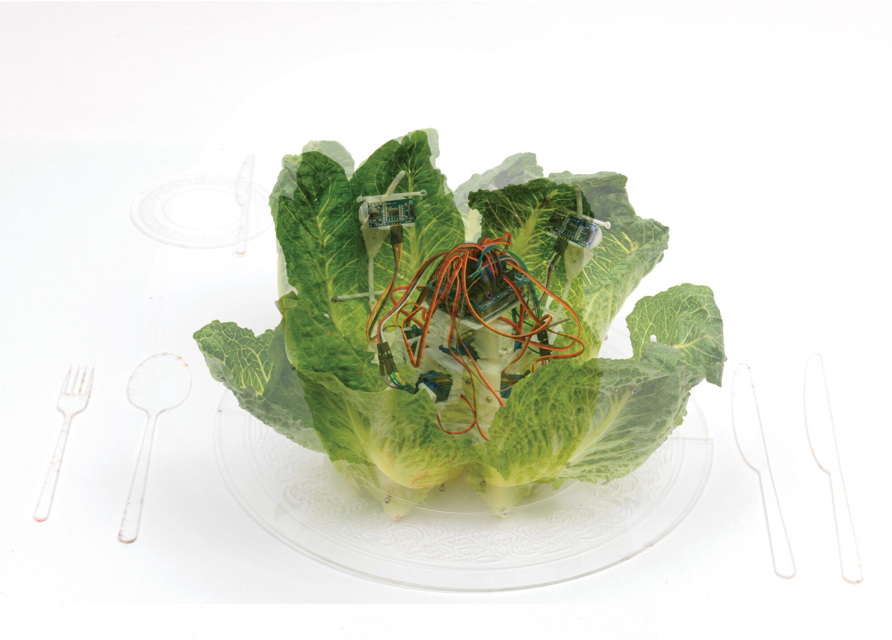
Plating- an act performed on any meal as it is placed on the dish. With centuries of tradition and history, the art of food presentation has undergone much exploration and experimentation yet has failed to address the spatial nature of food display. Plating, a form of microarchitecture, has implications beyond the borders of the dish, and has spatial and behavioral effects on the consumers. This experiment examines the development of a plating technique addressing gastronomic proxemics via robotic actuation of the food. The meaningful act of combining artificial robotic elements with natural food elements the project is able to implement proxemic-based responses to the unique human relationships to food. This leads to the ability to map proxemic concepts onto non-living elements such as cuisine.
The art of food presentation, or “plating”, is a critical aspect of meal preparation which has been proven to have an immense effect on the perception and taste of the cooking. Many studies have been conducted examining the effects of various plating configurations and techniques on the consumer’s opinions of the meals, comparing traditional and contemporary presentation, balanced and unbalanced compositions, neat and messy presentations, and even a study examining the success of artistic presentations inspired by Kandinsky paintings. The literature in the field of gastronomy has made evident that plating is a valuable aesthetic determining factor for the success of cuisine.
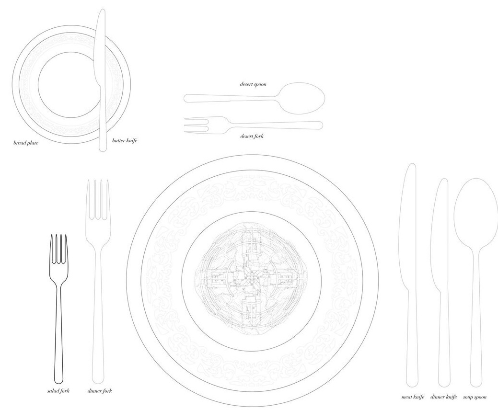
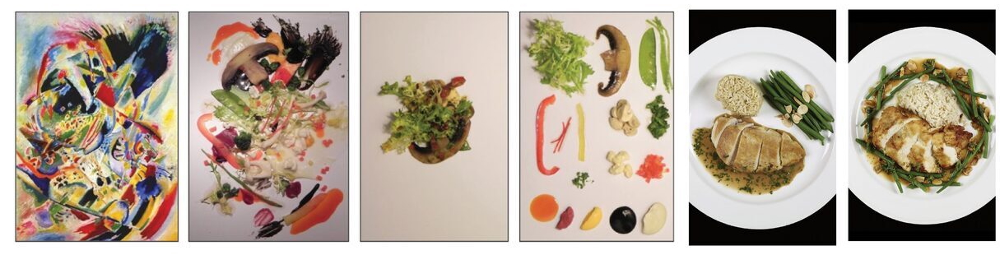
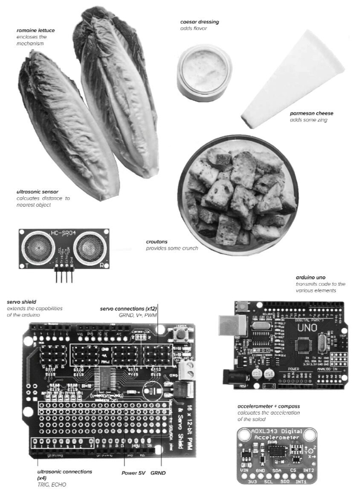
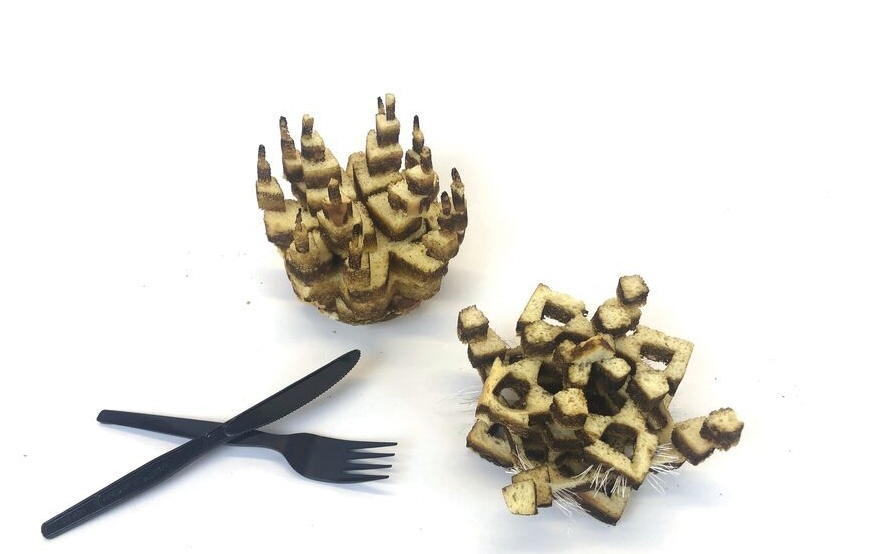
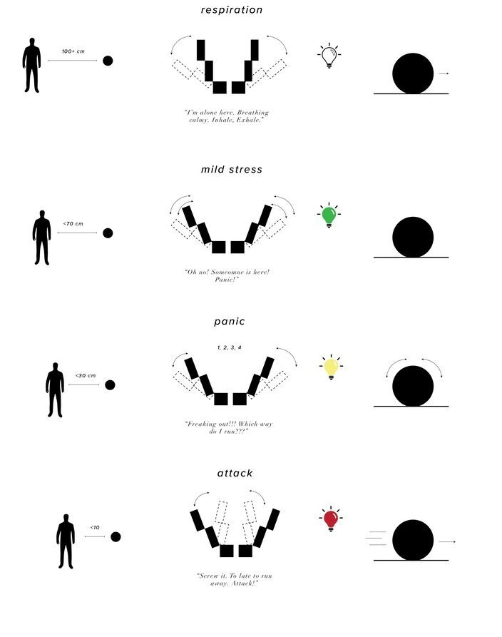
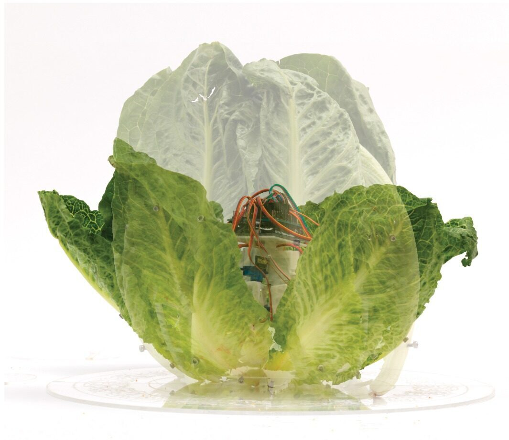
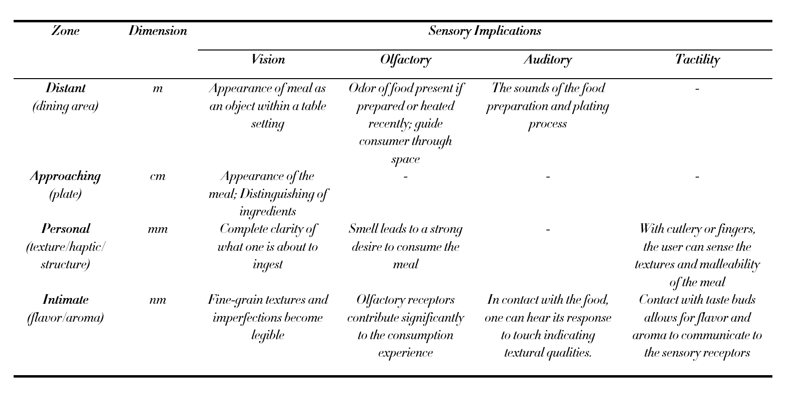
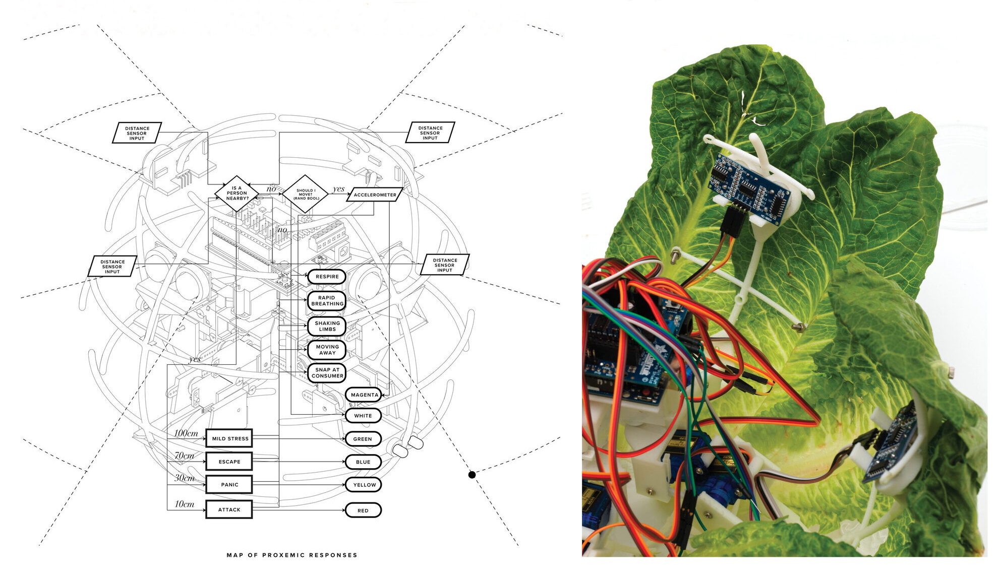
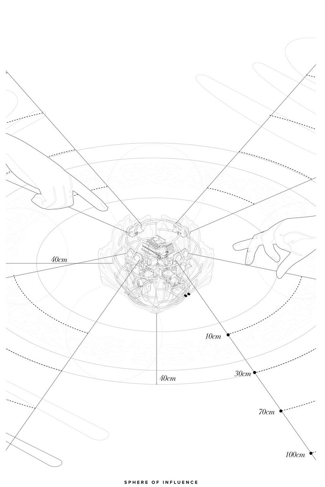
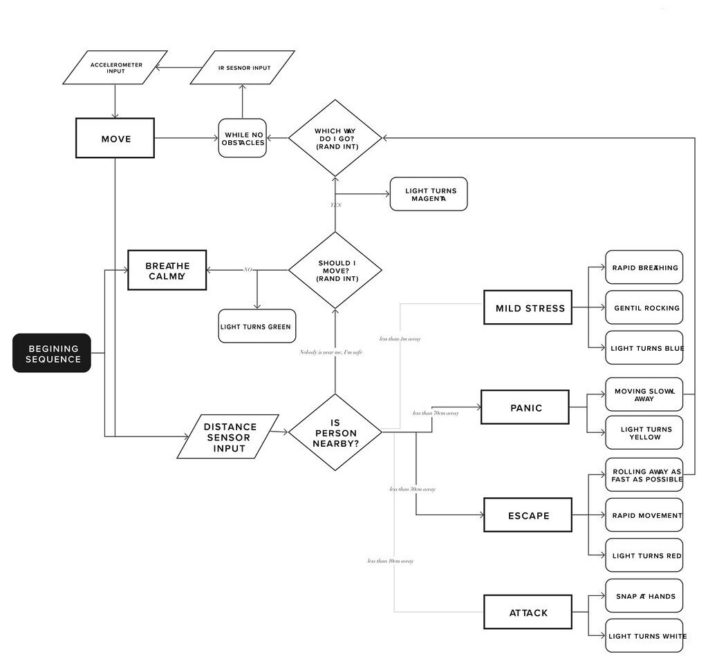